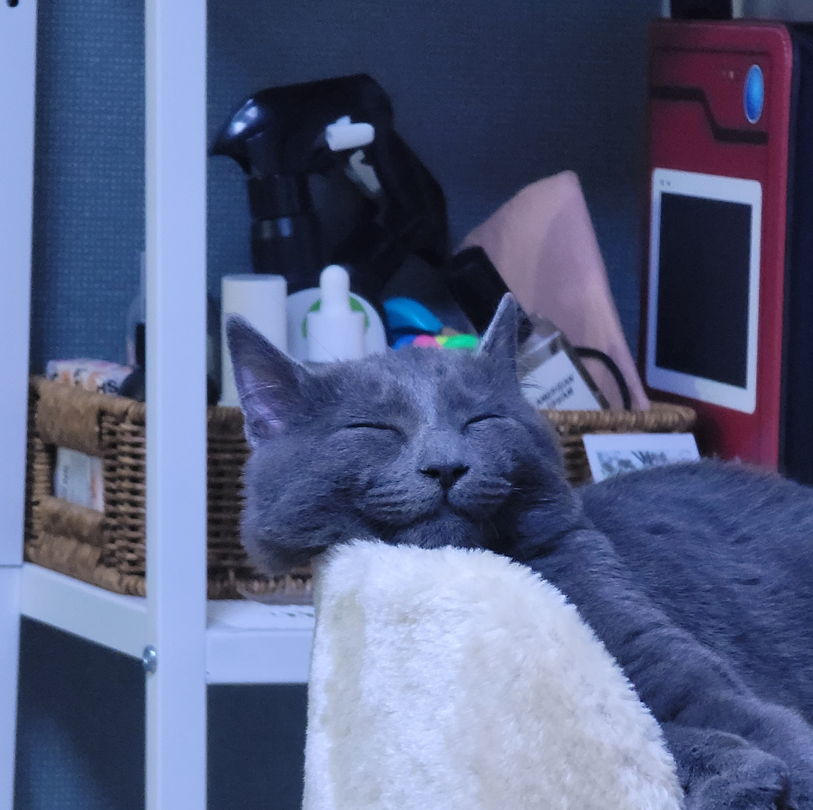

아종에 따라 다르지만, 일반인들이 흔히 아프리카사자라고 하면 지칭하는 종인 마사이사자는
수컷이 몸길이 185cm, 꼬리길이 90cm, 몸무게 185kg, 어깨높이는 110cm에 이르며, 암컷이 몸길이 155cm, 꼬리길이 80cm, 몸무게 125kg, 어깨 95cm로 수컷은 암컷보다 훨씬 크다.
몸통이 짧고 다리가 길며, 배가 달라붙어 있어 달리기에 적당하다.
수컷은 1년 반이면 목에 특유의 갈기가 나기 시작하고, 4년이지나면 더욱 풍성해진다. 또한 암컷은 어릴 적 반점이 약간 남아있다.
크고 두꺼운 발에는 먹이를 할퀴고 꿸 수 있는 구부러진 날카로운 발톱이 있는데 사용하지 않을 때는 발에 있는 발톱집으로 들어가 있어 항상 날카롭게 유지된다. 이는 30개이며, 큰 송곳니 4개로는 먹이를 물어 죽인다.
생활
대부분 무리지어 생활한다. 한 무리는 성숙한 젊은 수컷 1-3마리와 암컷 10마리, 늙은 암컷 5마리, 덜 성숙한 암컷 2마리, 덜 성숙한 수컷 1마리, 한 살 이상의 새끼 1-2마리, 한 살 이하의 새끼 1-5마리로 이루어지는데, 이것을 프라이드(pride)라고 한다.
프라이드는 거의 일정한 행동권을 갖는데 보통 40-50km2 반경에서 이루어진다.
프라이드 가운데 가장 큰 프라이드를 슈퍼프라이드라고 부르는데 약 30마리로 구성된 것도 알려져 있다.